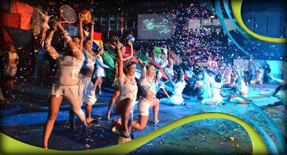

University of the Cordilleras Athletics
UC Jaguars champion 30th season of BBEAL
University of the Cordilleras Jaguars unseated defending champions University of Baguio Cardinals to be the new overall champion at the close of the Baguio-Benguet Educational Athletic League Season 30.
The UC Jaguars garnered a total of 727 points courtesy of its dominance in the men and women category of badminton, taekwondo, wushu, softball and tennis.
Alhough the Cardinals, who settled for second place with 663 points, led the second phase of the event, it was not enough to compensate the lopsided victory of the Jaguars' 65-point lead during the first phase of the biggest collegiate sports games in the region.
It was also the men that helped propel Jaguars to win in judo, table tennis, basketball, athletics, and volleyball. The women Cardinals contributed in chess, judo, table tennis, basketball, athletics, and volleyball.
The
Cardinals dominated the men and women category in archery and arnis, and men's swimming.
Saint Louis University Navigators followed on third place with 569 points topping in the men's chess, sepak takraw, and women's swimming.
The
Philippine Military Academy Cavaliers is on fourth place with 377 points and championed in boxing.
Benguet State University Wildcats followed with 310 points dominating baseball and football.
The runners up in order are: Cordillera Career and Development College Admirals with 168 points, Kings College of the Philippines Tigers and Baguio College of Technology Atoms each having 97 points, Pines City Colleges Warriors with 81 points, University of the Philippines-Baguio Maroons with 74.5 points, and Baguio Central University Eagles with 59.5 points.
READ MORE NEWS
UC Jaguars champion 30th season of BBEAL
June 04, 2017
University of the Cordilleras Jaguars unseated defending champions University of Baguio Cardinals to be the new overall champion at the close of the Baguio-Benguet Educational Athletic League Season 30.
UC wushu athletes win 72 medals for Philippines since 2001
December 18, 2016
The University of the Cordilleras remains as a home to world-class wushu athletes in the country for delivering 22 gold, 33 silver, and 22 bronze medals in international events in 15 years, considered as one of the greatest accomplishments by a Baguio-based university.
UC Jaguars sweep Atoms to win BBEAL hoops title
November 27, 2016
The University of the Cordilleras Jaguars swept the Baguio College of Technology Atoms in game 2 of the best of three finals clinching the most coveted and highly contested men's basketball title of the Baguio-Benguet Educational Athletic League, Wednesday night.
Wally sets record for Philippines with two international wushu golds
November 13, 2016
This will go down for the record.
Baguio lass bags gold in Sanda World Cup
November 08, 2016
DIVINE Wally made history after becoming the first Filipina to bag a back to back gold medal in an international sanda competition.